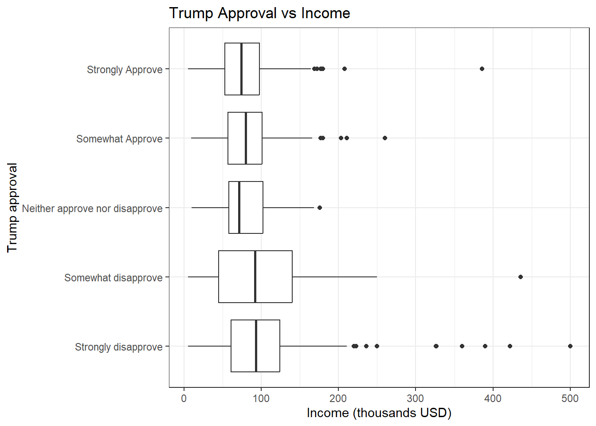
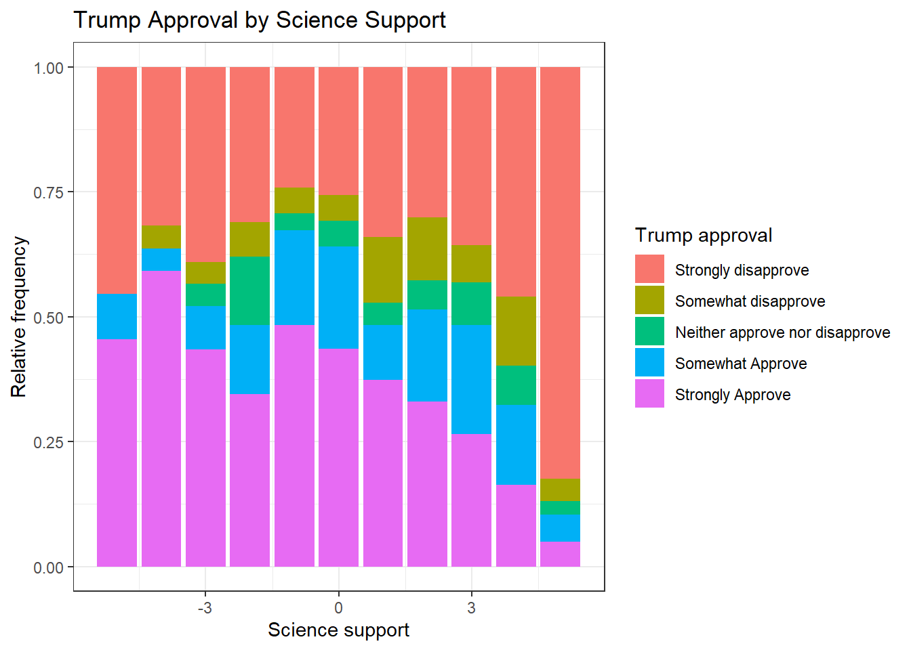
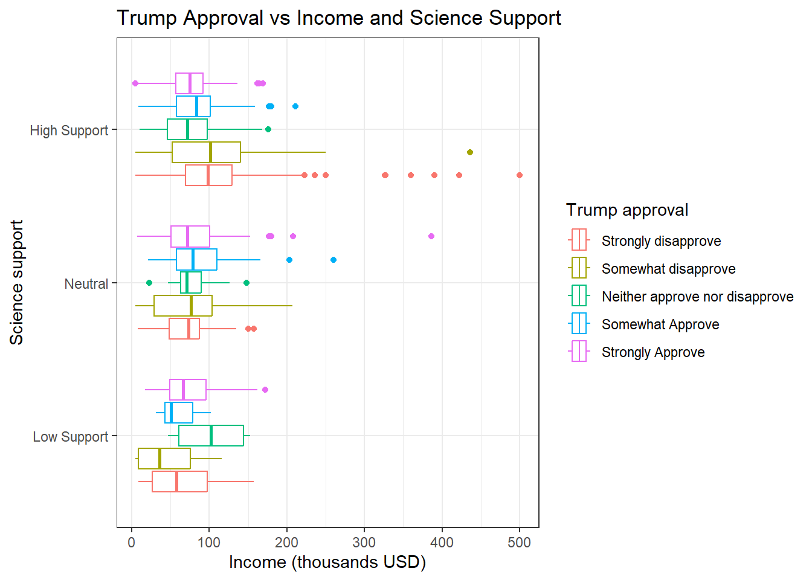
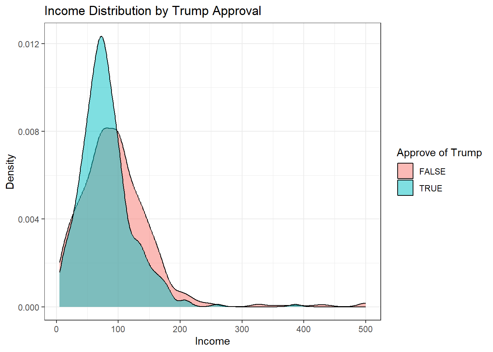
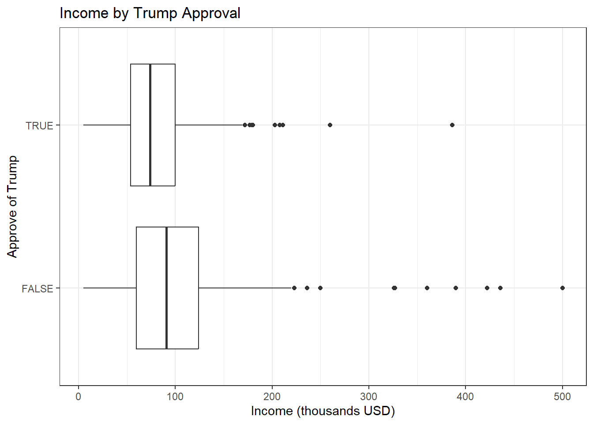
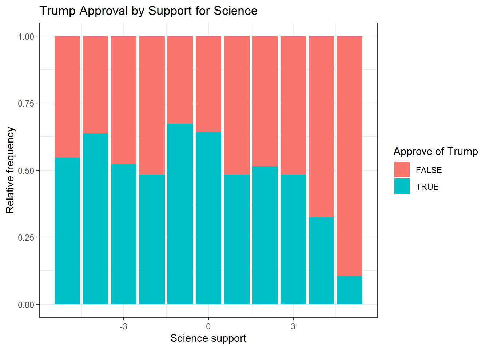
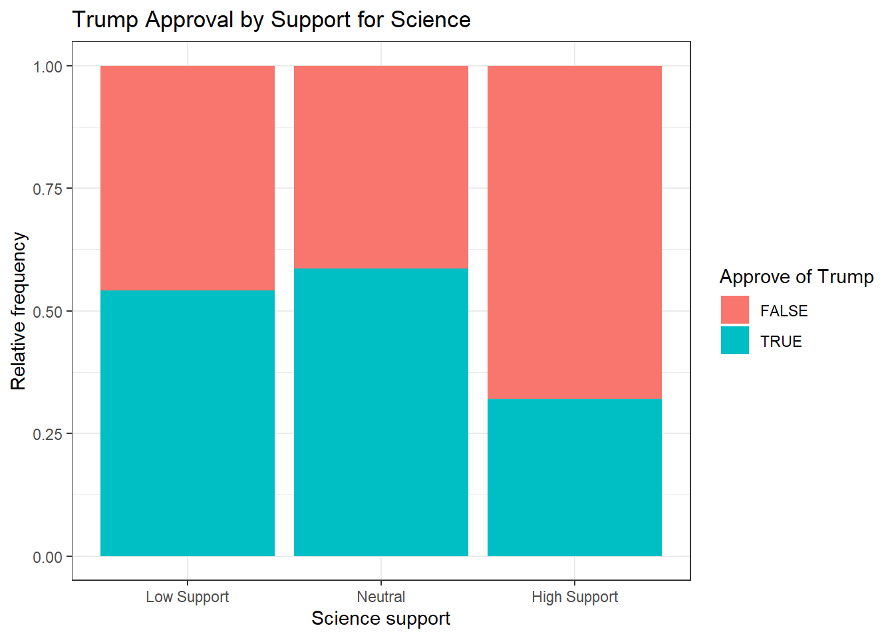
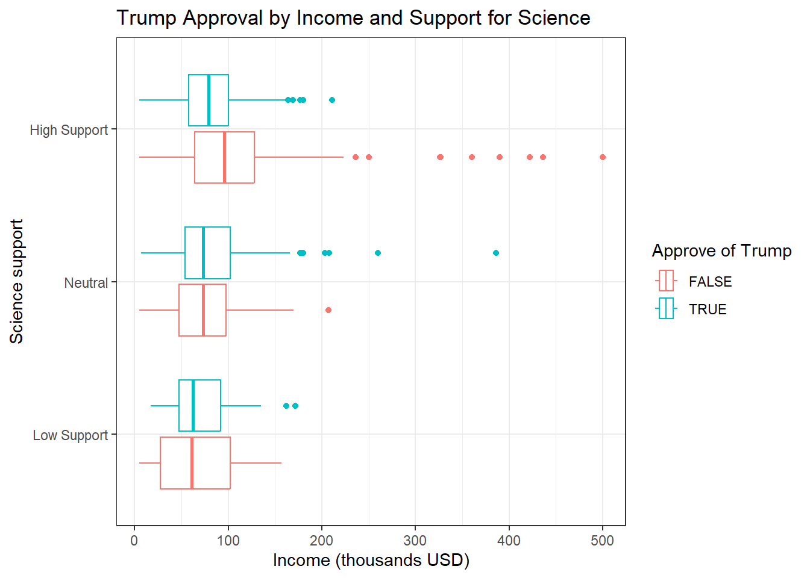
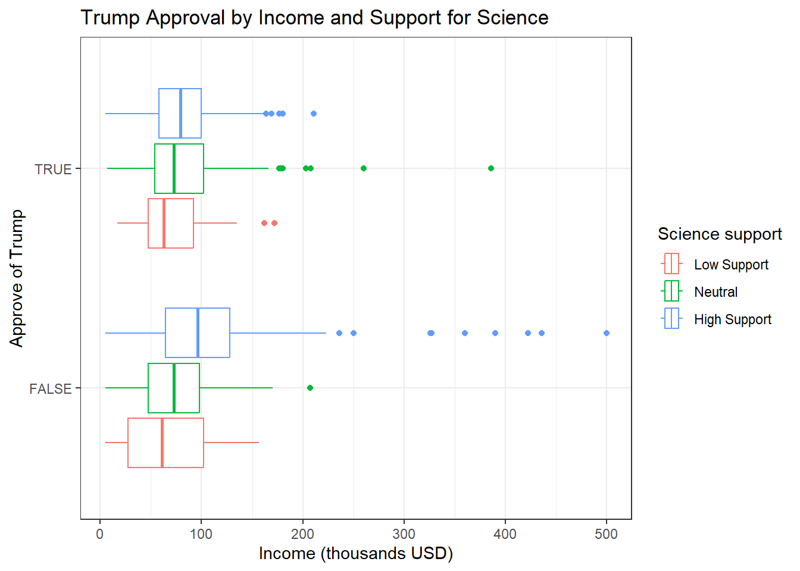

#run once to use mosaic plots
#install.packages("devtools")
#devtools::install_github("haleyjeppson/ggmosaic")Final Project
STAT 155
Setup
#load packages
library(dplyr)
Attaching package: 'dplyr'The following objects are masked from 'package:stats':
filter, lagThe following objects are masked from 'package:base':
intersect, setdiff, setequal, unionlibrary(ggplot2)
library(tidyverse)── Attaching core tidyverse packages ──────────────────────── tidyverse 2.0.0 ──
✔ forcats 1.0.1 ✔ stringr 1.6.0
✔ lubridate 1.9.4 ✔ tibble 3.3.1
✔ purrr 1.2.1 ✔ tidyr 1.3.2
✔ readr 2.1.6 ── Conflicts ────────────────────────────────────────── tidyverse_conflicts() ──
✖ dplyr::filter() masks stats::filter()
✖ dplyr::lag() masks stats::lag()
ℹ Use the conflicted package (<http://conflicted.r-lib.org/>) to force all conflicts to become errorslibrary(ggmosaic)#set visuals
theme_set(theme_bw())#import survey data
pulse <- read.csv("pulse_of_the_nation_processed.csv")
#set indicators manually
#trump approval
pulse$trump_approval <- fct_relevel(pulse$trump_approval, "Strongly disapprove", "Somewhat disapprove", "Neither approve nor disapprove", "Somewhat Approve", "Strongly Approve")
#science is honest
pulse$science_is_honest <- fct_relevel(pulse$science_is_honest, "Strongly Disagree", "Somewhat Disagree", "Neither Agree nor Disagree", "Somewhat Agree", "Strongly Agree")
#vaccines are safe
pulse$vaccines_are_safe <- fct_relevel(pulse$vaccines_are_safe, "Strongly Disagree", "Somewhat Disagree", "Neither Agree nor Disagree", "Somewhat Agree", "Strongly Agree")
# fed sci budget
pulse$fed_sci_budget <- fct_relevel(pulse$fed_sci_budget, "Too High", "About Right", "Too Low")
#create numeric versions of factors
#fed sci budget
pulse$fed_sci_budget_numeric <- pulse$fed_sci_budget
levels(pulse$fed_sci_budget_numeric) <- c(-1, 0, 1)
pulse$fed_sci_budget_numeric <- as.numeric(as.character(pulse$fed_sci_budget_numeric))
#trump approval
pulse$trump_approval_numeric <- pulse$trump_approval
levels(pulse$trump_approval_numeric) <- c(-2, -1, 0, 1, 2)
pulse$trump_approval_numeric <- as.numeric(as.character(pulse$trump_approval_numeric))
#trump approval, binary
pulse <- pulse %>%
mutate(trump_approval_binary = trump_approval_numeric > 0)
#science is honest
pulse$science_is_honest_numeric <- pulse$science_is_honest
levels(pulse$science_is_honest_numeric) <- c(-2, -1, 0, 1, 2)
pulse$science_is_honest_numeric <- as.numeric(as.character(pulse$science_is_honest_numeric))
#vaccines are safe
pulse$vaccines_are_safe_numeric <- pulse$vaccines_are_safe
levels(pulse$vaccines_are_safe_numeric) <- c(-2, -1, 0, 1, 2)
pulse$vaccines_are_safe_numeric <- as.numeric(as.character(pulse$vaccines_are_safe_numeric))
#combine science related variables to create trust in science score
pulse$science_support <- pulse$fed_sci_budget_numeric + pulse$science_is_honest_numeric + pulse$vaccines_are_safe_numeric
#create factored version of science support variable
pulse <- pulse %>%
mutate(science_support_factored = case_when(
(science_support < -1) ~ "Low Support",
(science_support > 1) ~ "High Support",
.default = "Neutral"
))
pulse$science_support_factored <- fct_relevel(pulse$science_support_factored, "Low Support", "Neutral", "High Support")
#create binary degree variable
pulse$degree <- pulse$education
levels(pulse$degree) <- c("2", "1", "0", "-1", "-2")
pulse$degree <- fct_recode(pulse$degree, "2" = "Graduate degree",
"1" = "College degree",
"0" = "Some college",
"-1" = "High school",
"-2" = "Other")
pulse$degree <- as.numeric(as.character(pulse$degree))
pulse <- pulse %>%
mutate(degree = case_when(
(degree <= 0) ~ "No",
(degree > 0) ~ "Yes",
))Numerical summaries
#counts
count(pulse, education) education n
1 College degree 315
2 Graduate degree 200
3 High school 190
4 Other 18
5 Some college 277count(pulse, science_is_honest) science_is_honest n
1 Strongly Disagree 110
2 Somewhat Disagree 141
3 Neither Agree nor Disagree 19
4 Somewhat Agree 356
5 Strongly Agree 374count(pulse, vaccines_are_safe) vaccines_are_safe n
1 Strongly Disagree 62
2 Somewhat Disagree 76
3 Neither Agree nor Disagree 17
4 Somewhat Agree 205
5 Strongly Agree 640count(pulse, fed_sci_budget) fed_sci_budget n
1 Too High 160
2 About Right 351
3 Too Low 489count(pulse, trump_approval) trump_approval n
1 Strongly disapprove 458
2 Somewhat disapprove 85
3 Neither approve nor disapprove 57
4 Somewhat Approve 144
5 Strongly Approve 256#income numerical summaries
pulse %>%
summarise(mean = mean(income),
sd = sd(income),
min = min(income),
max = max(income),
quantile(income, c(.25, .5, .75)))Warning: Returning more (or less) than 1 row per `summarise()` group was deprecated in
dplyr 1.1.0.
ℹ Please use `reframe()` instead.
ℹ When switching from `summarise()` to `reframe()`, remember that `reframe()`
always returns an ungrouped data frame and adjust accordingly. mean sd min max quantile(income, c(0.25, 0.5, 0.75))
1 89.58 55.26299 5 500 56.75
2 89.58 55.26299 5 500 80.00
3 89.58 55.26299 5 500 113.00Visualizations
#Trump - Do you approve, disapprove, or neither approve nor disapprove of how Donald Trump is handling his job as president?
#by income
pulse %>%
ggplot(aes(x = income, y = trump_approval)) +
geom_boxplot() +
labs(x = "Income (thousands USD)",
y = "Trump approval",
title = "Trump Approval vs Income")
#by science support
pulse %>%
ggplot(aes(x = science_support, fill = trump_approval)) +
geom_bar(position = "fill") +
labs(x = "Science support",
y = "Relative frequency",
fill = "Trump approval",
title = "Trump Approval by Science Support")
#by income and science support
pulse %>%
ggplot(aes(x = income, y = science_support_factored, color = trump_approval)) +
geom_boxplot() +
labs(x = "Income (thousands USD)",
y = "Science support",
color = "Trump approval",
title = "Trump Approval vs Income and Science Support")
Alternative Visualizations
pulse %>%
ggplot(aes(x = income, fill = trump_approval_binary)) +
geom_density(alpha = 0.5) +
labs(x = "Income", y = "Density", fill = "Approve of Trump", title = "Income Distribution by Trump Approval")
pulse %>%
ggplot(aes(x = income, y = trump_approval_binary)) +
geom_boxplot() +
labs(x = "Income (thousands USD)",
y = "Approve of Trump",
title = "Income by Trump Approval")
pulse %>%
ggplot(aes(x = science_support, fill = trump_approval_binary)) +
geom_bar(position = "fill") +
labs(x = "Science support",
y = "Relative frequency",
fill = "Approve of Trump",
title = "Trump Approval by Support for Science")
pulse %>%
ggplot(aes(x = science_support_factored, fill = trump_approval_binary)) +
geom_bar(position = "fill") +
labs(x = "Science support",
y = "Relative frequency",
fill = "Approve of Trump",
title = "Trump Approval by Support for Science")
#v1
pulse %>%
ggplot(aes(x = income, y = science_support_factored, color = trump_approval_binary)) +
geom_boxplot() +
labs(x = "Income (thousands USD)",
y = "Science support",
color = "Approve of Trump",
title = "Trump Approval by Income and Support for Science")
#v2, axes switched
pulse %>%
ggplot(aes(x = income, y = trump_approval_binary, color = science_support_factored)) +
geom_boxplot() +
labs(x = "Income (thousands USD)",
y = "Approve of Trump",
color = "Science support",
title = "Trump Approval by Income and Support for Science")
Models
#logistic regression models of Trump approval
#income
trump_mod1 <- glm(trump_approval_binary ~ income, family = "binomial", data = pulse)
summary(trump_mod1)
Call:
glm(formula = trump_approval_binary ~ income, family = "binomial",
data = pulse)
Coefficients:
Estimate Std. Error z value Pr(>|z|)
(Intercept) 0.113781 0.135211 0.842 0.4
income -0.005952 0.001396 -4.263 2.02e-05 ***
---
Signif. codes: 0 '***' 0.001 '**' 0.01 '*' 0.05 '.' 0.1 ' ' 1
(Dispersion parameter for binomial family taken to be 1)
Null deviance: 1346.0 on 999 degrees of freedom
Residual deviance: 1325.2 on 998 degrees of freedom
AIC: 1329.2
Number of Fisher Scoring iterations: 4exp(coef(summary(trump_mod1))) Estimate Std. Error z value Pr(>|z|)
(Intercept) 1.1205068 1.144778 2.31985976 1.49192
income 0.9940656 1.001397 0.01408429 1.00002#income + science support
trump_mod2 <- glm(trump_approval_binary ~ income + science_support, family = "binomial", data = pulse)
summary(trump_mod2)
Call:
glm(formula = trump_approval_binary ~ income + science_support,
family = "binomial", data = pulse)
Coefficients:
Estimate Std. Error z value Pr(>|z|)
(Intercept) 0.482801 0.145633 3.315 0.000916 ***
income -0.003627 0.001416 -2.561 0.010423 *
science_support -0.251285 0.029256 -8.589 < 2e-16 ***
---
Signif. codes: 0 '***' 0.001 '**' 0.01 '*' 0.05 '.' 0.1 ' ' 1
(Dispersion parameter for binomial family taken to be 1)
Null deviance: 1346.0 on 999 degrees of freedom
Residual deviance: 1243.8 on 997 degrees of freedom
AIC: 1249.8
Number of Fisher Scoring iterations: 4exp(coef(trump_mod2)) (Intercept) income science_support
1.6206071 0.9963792 0.7778006 #does controlling for science support make the model significantly stronger?
anova(trump_mod1, trump_mod2)Analysis of Deviance Table
Model 1: trump_approval_binary ~ income
Model 2: trump_approval_binary ~ income + science_support
Resid. Df Resid. Dev Df Deviance Pr(>Chi)
1 998 1325.2
2 997 1243.8 1 81.466 < 2.2e-16 ***
---
Signif. codes: 0 '***' 0.001 '**' 0.01 '*' 0.05 '.' 0.1 ' ' 1#income * science support
trump_mod3 <- glm(trump_approval_binary ~ income * science_support, family = "binomial", data = pulse)
summary(trump_mod3)
Call:
glm(formula = trump_approval_binary ~ income * science_support,
family = "binomial", data = pulse)
Coefficients:
Estimate Std. Error z value Pr(>|z|)
(Intercept) -0.0826587 0.1840690 -0.449 0.6534
income 0.0043848 0.0022449 1.953 0.0508 .
science_support 0.0052917 0.0597692 0.089 0.9295
income:science_support -0.0033341 0.0007118 -4.684 2.81e-06 ***
---
Signif. codes: 0 '***' 0.001 '**' 0.01 '*' 0.05 '.' 0.1 ' ' 1
(Dispersion parameter for binomial family taken to be 1)
Null deviance: 1346.0 on 999 degrees of freedom
Residual deviance: 1219.9 on 996 degrees of freedom
AIC: 1227.9
Number of Fisher Scoring iterations: 4exp(coef(trump_mod3)) (Intercept) income science_support
0.9206653 1.0043945 1.0053058
income:science_support
0.9966715 #is the model with the effect modifier significantly stronger than without?
anova(trump_mod2, trump_mod3) #p = 2.491e-07, so yes!Analysis of Deviance Table
Model 1: trump_approval_binary ~ income + science_support
Model 2: trump_approval_binary ~ income * science_support
Resid. Df Resid. Dev Df Deviance Pr(>Chi)
1 997 1243.8
2 996 1219.8 1 23.915 1.007e-06 ***
---
Signif. codes: 0 '***' 0.001 '**' 0.01 '*' 0.05 '.' 0.1 ' ' 1#income * science support + degree
trump_mod4 <- glm(trump_approval_binary ~ income * science_support + degree, family = "binomial", data = pulse)
summary(trump_mod4)
Call:
glm(formula = trump_approval_binary ~ income * science_support +
degree, family = "binomial", data = pulse)
Coefficients:
Estimate Std. Error z value Pr(>|z|)
(Intercept) -0.078670 0.186791 -0.421 0.6736
income 0.004429 0.002272 1.949 0.0513 .
science_support 0.005566 0.059798 0.093 0.9258
degreeYes -0.018049 0.144000 -0.125 0.9003
income:science_support -0.003331 0.000712 -4.679 2.89e-06 ***
---
Signif. codes: 0 '***' 0.001 '**' 0.01 '*' 0.05 '.' 0.1 ' ' 1
(Dispersion parameter for binomial family taken to be 1)
Null deviance: 1346.0 on 999 degrees of freedom
Residual deviance: 1219.8 on 995 degrees of freedom
AIC: 1229.8
Number of Fisher Scoring iterations: 4exp(coef(trump_mod4)) (Intercept) income science_support
0.9243449 1.0044388 1.0055818
degreeYes income:science_support
0.9821132 0.9966744 #does controlling for college degree make the model significantly stronger?
anova(trump_mod2, trump_mod4)Analysis of Deviance Table
Model 1: trump_approval_binary ~ income + science_support
Model 2: trump_approval_binary ~ income * science_support + degree
Resid. Df Resid. Dev Df Deviance Pr(>Chi)
1 997 1243.8
2 995 1219.8 2 23.931 6.36e-06 ***
---
Signif. codes: 0 '***' 0.001 '**' 0.01 '*' 0.05 '.' 0.1 ' ' 1exp(0.000712)[1] 1.000712\[ log(Odds(Trump\,Approval|Income, Science\,Support, Degree)) = \beta_0 + \beta_1Income + \beta_2Science\,Support + \beta_3Income*Science\,Support + \beta_4Degree \]
Evaluation
threshold <- .5
pulse <- pulse %>%
mutate(predicted_approve = predict.glm(trump_mod4, newdata = pulse, type = "response") >= threshold)
#confusion matrix
pulse %>%
count(trump_approval_binary, predicted_approve) trump_approval_binary predicted_approve n
1 FALSE FALSE 493
2 FALSE TRUE 107
3 TRUE FALSE 246
4 TRUE TRUE 154pulse %>%
summarise(mean = mean(science_support),
sd = sd(science_support),
min = min(science_support),
max = max(science_support),
quantile(science_support, c(.25, .5, .75)))Warning: Returning more (or less) than 1 row per `summarise()` group was deprecated in
dplyr 1.1.0.
ℹ Please use `reframe()` instead.
ℹ When switching from `summarise()` to `reframe()`, remember that `reframe()`
always returns an ungrouped data frame and adjust accordingly. mean sd min max quantile(science_support, c(0.25, 0.5, 0.75))
1 2.357 2.470152 -5 5 1
2 2.357 2.470152 -5 5 3
3 2.357 2.470152 -5 5 4